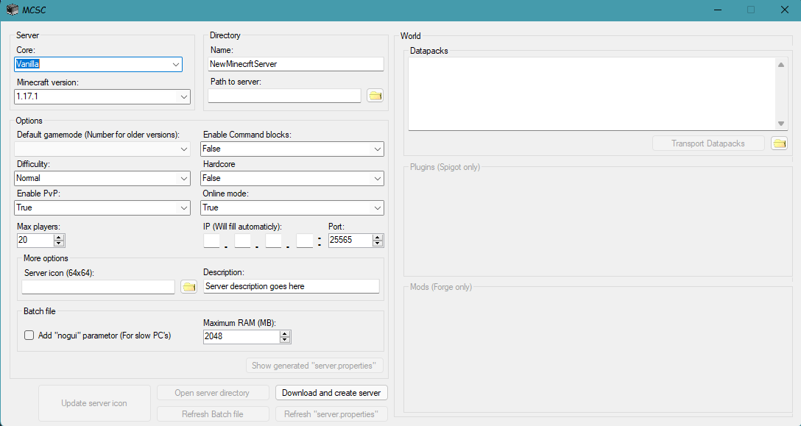
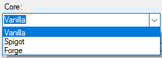

Instruction for
MCServerSetup
Step 0: Once you start the program, you will see this window:

Step 1: Choose Server Core (There are no version available for Vanilla and Forge, it will be fixed in fufure versions):
Vanilla(By Mojang),
Spigot(Support plugins),
Forge(Support
mods)
